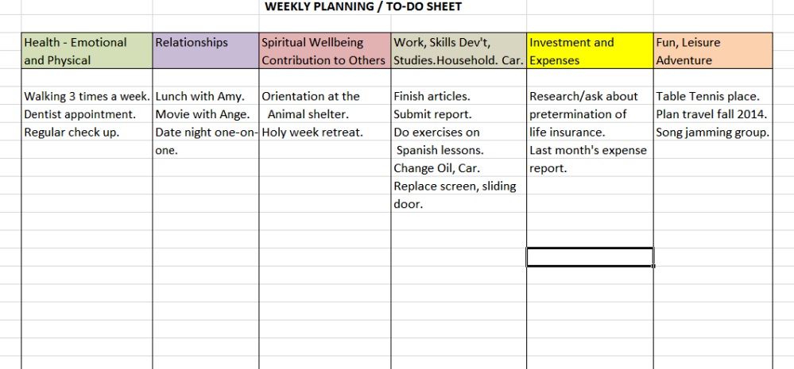
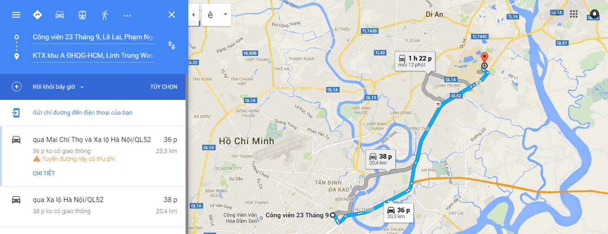

BƯỚC 4
Sang đến bước này, tức là chúng ta đã có quyết định sơ lược về nơi mình sẽ đến thăm. Lúc này, ta truy xuất lại thông tin cụ thể của sự kiện mình đang nhắm tới, và lên lịch sắp xếp tham quan.

Lên kế hoạch cụ thể giúp hoạt động hiệu quả (Nguồn : Internet)
Các thông tin thường được quan tâm trong lúc này là:
+ Địa điểm tổ chức sự kiện
+ Thông tin chi tiết và lịch trình sự kiện
+ Thông tin về BTC
+ Các phương tiện giao thông để đến nơi

Tra Google Map để tìm đường đi
BƯỚC 4
Lên kế hoạch cụ thể giúp hoạt động hiệu quả (Nguồn : Internet)
Tra Google Map để tìm đường đi